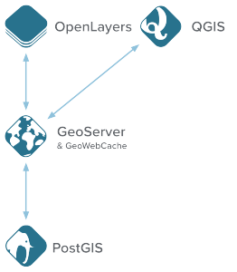

Created by Kyle Schutt / @kschutt
https://maps.googleapis.com/maps/api/directions/json?origin=lat1,lon1&destination=lat2,lon2
| Bing | OSM/MQ | ArcGIS | ||
|---|---|---|---|---|
| Basemap Loads | Unlimited | Unlimited | Unlimited | Difficult |
| Geocoding | 2,500 per day | 30,000 per day* | Unlimited | Difficult |
| Routing | 2,500 per day | 30,000 per day* | Unlimited | Difficult |
We have covered most of these in class already.
Full stack solution for geospatial software with OpenGeo Suite
Query on a non-spatial attribute
SELECT
st_FlipCoordinates(st_intersection(a.the_geom, b.the_geom))
FROM
"opengeo"."VBMP_RCL_SHP" as a,
"opengeo"."VBMP_RCL_SHP" as b
WHERE
a."SN_FULL" % '%primary_name%'
and b."SN_FULL" % '%secondary_name%'
AND ST_Touches(a.the_geom, b.the_geom)
AND a.fid != b.fid
GROUP BY
st_FlipCoordinates(st_intersection(a.the_geom, b.the_geom))
Query on a spatial attribute
SELECT
a.fid, a."SN_FULL", a."VDOT_RNUM", st_flipcoordinates(st_buffer(a.the_geom,0.000000000001)) as the_geom
FROM
"opengeo"."VBMP_RCL_SHP" as a
WHERE
st_intersects(a.the_geom, st_buffer(st_pointfromtext('POINT(%lat_lon%)',4269), 0.0005))
ORDER BY
st_distance(st_pointfromtext('POINT(%lat_lon%)',4269), a.the_geom)
Show a few layers served by OGS. Dynamically add new features and respond to events.
var map = new Openlayers.Map('map');
var rcl = new OpenLayers.Layer.WMS("RoadCenterLines", "//ogs_host_name/wms", {
layers : [
'opengeo:NHPN_STFIPS_51',
'opengeo:SDE_VDOT_RTE_OVERLAP_LRS',
'opengeo:VBMP_RCL_SHP0'
],
format : 'image/png',
transparent : true
}, {
isBaseLayer : false
});
map.addLayers([rcl]);